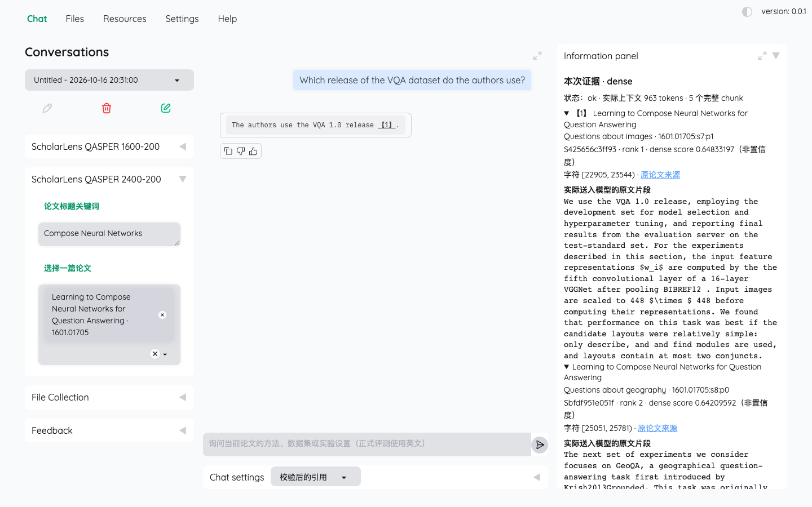

RESEARCH ARCHIVE / 03
烛微观澜
从原文证据，到执行边界，再到模型训练。
从问题出发，留下实验、工程与结论可以回望的记录。
-

真实演示界面 · 不计入正式评测 01 / EVIDENCE
论文 · 证据
ScholarLens
研究原型
面向用户选定单篇论文的本地 RAG 证据问答，保留可回看的原文位置与引用记录。
主要工作：正文与标注隔离、混合检索、引用审计与冻结评测。
0.6290Dense EvidenceRecall@5 · 冻结 Test 240 道可回答题
这是证据覆盖，不是答案正确率。
-
流程示意 · 不是成功执行记录 - 01模型提出具体参数提案
- 02应用校验身份与所有权
- 03用户确认针对当前参数
- 04事务与回执SQLite 提交记录
参数变化使旧确认失效；保护层正确性不等于模型任务成功。
02 / BOUNDARY
零售 · 执行
RetailFlow
实验原型
模拟零售环境中的本地 CLI Agent，探索工具执行前的身份校验、用户确认与事务恢复边界。
主要工作：具体参数提案、确认失效机制、SQLite 事务回执与冻结评测；不连接真实订单或支付。
B0/B1/B2 各 0/4历史冻结 Test · 2026-10-20
业务效果未达标；不以工程保护层的正确性代替业务结果。
-
严格决策匹配 · 冻结均衡 Test 0%100%- B0 89/190
- 46.84%
- U200 100/190
- 52.63%
17 题改善 / 6 题退化
95 调用 + 95 非调用；不代表真实 API 成功或生产流量准确率。
03 / TRAINING
微调 · 工具调用
ToolTune
实验原型
在 Apple Silicon 上进行本地量化 LoRA 微调，记录工具调用决策、参数输出与冻结 Test 的逐题变化。
主要工作：严格数据处理、分组抽样、训练目标校验与冻结对照；均衡诊断集结果不代表真实 API 执行成功率。